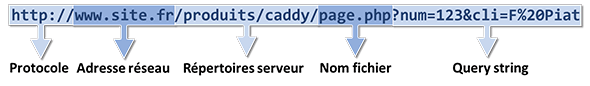

Nous avons vu que le navigateur utilise 2 méthodes privilégiées pour faire une requête au serveur : POST et GET. Ces 2 méthodes permettent de passer des informations au serveur, soit dans le corps du message HTTP (POST), soit à la suite de l'URL demandée (GET). Nous allons voir ici plus en détail le passage d'informations par l'URL et leur récupération dans le tableau $_GET.
Une URL est composée des parties suivantes :

C'est la partie "query string" qui nous intéresse. Les informations sont passées sous la forme de couples clé=valeur, séparés par le caractère &. Sur le serveur, avec PHP, on retrouve ces couples dans le tableau $_GET : la clé devient ... la clé d'un élement dont la valeur est égale à valeur.
Exemple de lien :
<a
href="lien01_get.php?id=12345&nom=piat"
target="_blank">cliquez ici</a>
Rendu :
cliquez
ici
L'attribut target permet de spécifier la cible dans laquelle va s'afficher le lien (ici un nouvel onglet pour qu'on puisse voir l'URL dans la barre d'URL du navigateur)
Le code PHP du fichier lien01_get.php est le suivant :
<?php
require('bib_fonctions.php');
htmlDebut('Informations transmises dans une URL');
foreach ($_GET as $nom => $valeur) {
htmlInfo($nom);
echo $valeur;
}
echo '<hr>';
htmlInfo('var_dump($_GET)');
echo '<pre>';
var_dump($_GET);
echo '</pre>';
htmlFin();
Remarquez, encore une fois, que toutes les valeurs des éléments reçus dans $_GET sont de type string, y compris '12345'.
Si les valeurs des paramètres passés dans l'URL sont des chaînes de caractères, elles doivent être encodées car les URLs ont un codage spécifiques pour certains caractères (caractères de séparations, caractères accentués, etc). On utilise :
Le lien de l'exemple s'ouvrira dans un nouvel onglet pour que vous puissiez voir/manipuler l'URL.
Remarquez l'encodage réalisé par urlencode() :
- le caractère = est remplacé par %3D
- le caractère espace ( ) est remplacé par un +
- les caractères alphanumériques ne sont pas modifiés
Quand on regarde dans la barre d'URL du navigateur, on a l'impression que les lettres accentuées ne sont pas modifiées , mais urlencode() les modifie. Démonstration :
Dans cette section, les lettres accentuées ne sont pas considérées comme des caractères alphanumériques.
On utilise fréquemment les paramètres dans les URLs pour passer des informations de page en page bien que l'une des faiblesses vienne de la modification manuelle possible de l'URL affichée par le navigateur.
On peut ainsi facilement passer des informations qui n'étaient pas attendues.
Le passage d'informations par les URLs doit donc être entouré de beaucoup de précautions :
Dans un site en production, lors de la réception des données, il faudrait, dans le script intitulé 'Paramètres dans des liens', protéger les chaînes provenant de la "query string" avec la fonction htmlentities(), avant de les envoyer au navigateur en appelant var_dump() .
Le chiffrement et la signature des données permettent de cacher et de protéger les valeurs passées dans les URLs.
Le chiffrement de données n'est pas la même chose que la signature de données (faite avec par exemple la méthode md5 bien connue) :
L'étude des différents modes de chiffrement dépassent de loin le cadre de ce tutoriel et nous n'entrerons pas dans les détails de tel ou tel algorithme.
Pour réaliser des chiffrements selon différentes méthodes et algorithmes, nous allons utiliser l'extension openSSL de PHP qui définit la fonction openssl_encrypt() et son pendant openssl_decrypt(). Généralement cette extension est compilée avec PHP, mais on peut s'en assurer avec la fonction function_exists() très pratique pour savoir ce qui est disponible dans la configuration ou version de PHP.
Pour chiffrer/déchiffrer des données, on peut donc utiliser ces fonctions openssl_encrypt() et openssl_decrypt() comme dans l'exemple suivant qui utilise l'algorithme AES (Advanced Encryption Standard) en mode CBC.
Remarques :
Pour générer une clé de chiffrement "correcte" à utiliser avec l'algorithme AES-128-CBC, on peut utiliser le script suivant :
La fonction openssl_random_pseudo_bytes() renvoie une chaine binaire qu'il ne faut donc pas afficher telle quelle dans le navigateur. La fonction base64_encode() permet d'encoder cette chaine binaire en Base64, ce qui permet d'obtenir une chaîne ASCII qui la représente, qu'on peut envoyer sans problème au navigateur pour pouvoir la copier/coller dans le script qui suit.
Ré-écriture de l'exemple sur le passage de paramètres dans une URL :
Le lien de l'exemple s'ouvrira dans un nouvel onglet pour que vous puissiez voir/manipuler l'URL.
La longueur de la chaîne chiffrée n'est pas constante.
La clé de chiffrement est définie par une constante.
Pour être capable de déchiffrer
la chaîne chiffrée à la réception des paramètres, il faut transmettre dans l'URL la chaîne chiffrée (retournée
par openssl_encrypt()) et
le vecteur d'initialisation $iv. Comme le vecteur d'initialisation $iv
a toujours la même longueur, nous pouvons les concaténer : on sera capable de séparer les 2 chaines lors de la
réception.
Ces 2 chaînes sont des chaînes binaires. Il est
donc absolument nécessaire de les encoder avec urlencode()
si on veut les passer dans une URL.
La fonction urlencode()
remplace tous les caractères non alphanumériques (hormis -_.) par des séquences commençant par un caractère
pourcentage (%), suivi de deux chiffres hexadécimaux. Les espaces sont remplacés par des signes plus (+).
Cela signifie que tous les octets qui ne sont pas
des codes ASCII de caractères alphanumériques, ou du caractère (-), ou du caractère (_), ou du
caractère (.) ou du caractère espace ( ) sont remplacés
par 3 octets. Donc, quand on lui fournit une chaîne binaire pseudo-aléatoire, la fonction urlencode()
remplace (256 - (26*2 + 10 + 4))/256 ≈ 75% des octets par 3 octets (les 25% restant ne sont pas modifiés,
sauf l'espace qui est transformé en signe plus (+)).
Conclusion :
l'encodage d'une chaine binaire pseudo-aléatoire
de longueur L avec urlencode() donne, en moyenne,
une chaîne ASCII de longueur
(L/4 + 3*3L/4) = 2,5L.
Décommentez maintenant les appels des fonctions base64_encode() et base64_decode() dans l'exemple précédent, et vous constaterez que l'appel de base64_encode() avant celui de urlencode() permet de réduire dans des proportions importantes la longueur de la "query string". En effet, le passage de la chaine à transmettre par la fonction base64_encode() multiplie sa longueur approximativement par 4/3=1,33 (24 bits dans la chaine d'origine, soit 3 octets, sont codés sur 4 octets dans la chaîne encodée en Base64). Mais comme le codage en Base64 utilise 65 caractères dont 62 sont alphanumériques, après passage par la fonction urlencode(), on obtient au final une chaîne encodée URL de longueur à peine supérieure à la longueur de la chaine encodée en Base64.
L'opérateur @ (arobase) de contrôle d'erreur est ajouté lors de l'appel de la fonction openssl_decrypt() afin de supprimer l'affichage d'un warning qui apparait notamment lorsqu'un des paramètres reçus, x, y ou z, a une longueur égale à 1 octet (suite à une modification de l'URL).
Si nous nous arrêtons au point précédent, certes les données transmises
dans la "query string" sont
chiffrées donc inintelligibles, mais
nous avons un problème : rien ne garantit que la
donnée reçue et déchiffrée est bien la même que celle qui a été
chiffrée et envoyée. On peut toujours modifier manuellement l'URL et
on obtiendra toujours quelque chose au déchiffrement, même si ce
quelque chose est totalement incohérent. Dans le cas d'un nombre
attendu, on pourra, si on reçoit une chaîne non numérique, se douter que l'URL a été modifiée, mais dans le
cas d'une chaîne de caractères attendue, on aura plus de mal à
définir si on est bien en face d'une tentative de corruption.
Pour vous en convaincre, essayez, dans l'exemple précédent, de remplacer
un caractère par un autre dans la valeur
d'un couple clé=valeur, avec ou sans appel des fonctions base64_encode() et base64_decode().
C'est ici que la signature de données intervient. Avec de tels algorithmes ("md5", "sha256", "haval160,4", "crc32", etc) nous allons pouvoir vérifier si les données reçues sont bien égales aux données émises. Pour cela :
Nous utiliserons la fonction hash_hmac() pour signer nos paramètres. On doit fournir à cette fonction le nom de l'algorithme à utiliser. Le choix est très grand : voir la documentation de la fonction hash_hmac_algos() pour une liste des algorithmes disponibles. Dans l'exemple suivant, nous utiliserons l'algorithme de hachage 'sha256' qui renvoie une signature de 32 octets (soit 256 bits) de long.
Pour utiliser l'algorithme de hachage 'sha256', nous devons générer une clé de 32 octets :
Un algorithme de hachage renvoie toujours une signature de la
même longueur, quelque soit la longueur de la chaîne de caractères
qui est signée.
Par exemple sha1 renverra une signature de
40 octets, sha224 de 56 octets, sha512 de 128 octets,
md5 de 32 octets, etc.
Comme la signature est de longueur fixe, nous pouvons également la concaténer avec la chaîne chiffrée et le vecteur d'initialisation $iv, et transmettre le tout dans la valeur d'un couple clé=valeur (nous choisissons dans l'exemple ci-dessous de transmettre le vecteur d'initialisation suivi de la chaine chiffrée au milieu de la signature de la chaine chiffrée pour "brouiller les pistes").
Le lien de l'exemple s'ouvrira dans un nouvel onglet pour que vous puissiez voir/manipuler l'URL.
La fonction hash_equals() compare deux chaînes en utilisant toujours le même temps de calcul, qu'elles soient égales ou pas. Elle est utilisée pour ne pas donner d'indications "temporelles" à d'éventuels hackers.
Quand PHP compare 2 chaînes avec l'opérateur ==, le temps de calcul dépend de la position du premier caractère différent dans les 2 chaines; plus le nombre de caractères identiques placés au début des 2 chaines augmente, plus la durée de la comparaison augmente.
Pour éviter d'avoir des URLs trop longues et avec trop d'éléments et de calcul de chiffrement / signature à faire, on peut concaténer les valeurs des paramètres avec un caractère séparateur comme dans l'exemple suivant.
Le lien de l'exemple s'ouvrira dans un nouvel onglet pour que vous puissiez voir/manipuler l'URL.
La version 7.1 de PHP a ajouté des paramètres aux fonctions openssl_encrypt()
et openssl_decrypt()
permettant d'authentifier la chaine chiffrée lors du déchiffrement.
La fonction openssl_encrypt()
renvoie toujours la chaine chiffrée, et on récupère, dans
la chaîne $tag transmise par référence, une chaine
permettant d'authentifier la chaine chiffrée reçue.
Notez bien que la fonction openssl_encrypt()
écrit dans $tag.
Cette chaîne $tag doit ensuite être transmise à la fonction openssl_decrypt()
qui va la lire afin d'authentifier la chaîne chiffrée reçue.
Pour pouvoir utiliser ces paramètres supplémentaires et donc le paramètre supplémentaire $tag, il faut utiliser un algorithme en mode AEAD (GCM ou CCM).
Dans l'exemple suivant, on utilise toujours l'algorithme AES-128, mais cette fois-ci en mode GCM : il chiffre ET signe les données. La fonction openssl_encrypt() permet de fixer la longueur du tag d'authentification. Sa valeur peut être entre 4 et 16 pour le mode GCM. Dans l'exemple suivant, on utilise la valeur par défaut du paramètre correspondant : le tag d'authentification a une longueur fixe égale à 16 octets.
Le lien de l'exemple s'ouvrira dans un nouvel onglet pour que vous puissiez voir/manipuler l'URL.
L'opérateur @ (arobase) de contrôle d'erreur est ajouté lors de l'appel de la fonction openssl_decrypt() afin de supprimer l'affichage d'un warning qui apparait notamment lorsque le paramètre xyz reçu est vide (suite à une modification de l'URL).